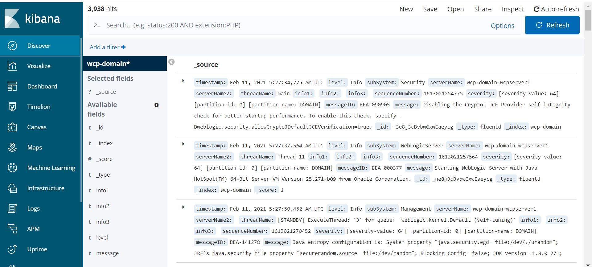

You can configure your WebLogic domain to use Fluentd so it can send the log information to Elasticsearch.
Here’s how this works:
fluentd runs as a separate container in the Administration Server and Managed Server pods.weblogic-server and fluentd containers.fluentd tails the domain logs files and exports them to Elasticsearch.ConfigMap contains the filter and format rules for exporting log records.It is assumed that you are editing an existing WebCenter Portal domain. However, you can make all the changes to the domain YAML before creating the domain. A complete example of a domain definition with fluentd configuration is at the end of this document.
These identifiers are used in the sample commands.
wcpns: WebCenter Portal domain namespacewcp-domain: domainUIDwcpinfra-domain-credentials: Kubernetes secretThe sample Elasticsearch configuration is:
elasticsearchhost: elasticsearch.wcp-domain.sample.com
elasticsearchport: 443
elasticsearchuser: username
elasticsearchpassword: password
To install Elasticsearch and Kibana, run the following command:
$ kubectl apply -f kubernetes/samples/scripts/elasticsearch-and-kibana/elasticsearch_and_kibana.yaml
The domain log files must be written to a volume that can be shared between the weblogic-server and fluentd containers. The following elements are required to accomplish this:
logHome must be a path that can be shared between containers.logHomeEnabled must be set to true so that the logs are written outside the pod and persist across pod restarts.volume must be defined on which the log files will reside. In the example, emptyDir is a volume that gets created when a Pod is created. It will persist across pod restarts but deleting the pod would delete the emptyDir content.volumeMounts mounts the named volume created with emptyDir and establishes the base path for accessing the volume.NOTE: For brevity, only the paths to the relevant configuration are here.
For Example, run : kubectl edit domain wcp-domain -n wcpns and make the following edits:
spec:
logHome: /u01/oracle/user_projects/domains/logs/wcp-domain
logHomeEnabled: true
serverPod:
volumes:
- emptyDir: {}
name: weblogic-domain-storage-volume
volumeMounts:
- mountPath: /scratch
name: weblogic-domain-storage-volume
Configure the fluentd container to look for Elasticsearch parameters in the domain credentials. Edit the domain credentials and add the parameters shown in the example below.
For example, run: kubectl edit secret wcpinfra-domain-credentials -n wcpns and add the base64 encoded values of each Elasticsearch parameter:
elasticsearchhost: ZWxhc3RpY3NlYXJjaC5ib2JzLWJvb2tzLnNhbXBsZS5jb20=
elasticsearchport: NDQz
elasticsearchuser: Ym9i
elasticsearchpassword: d2VsY29tZTE=
Create a ConfigMap named fluentd-config in the namespace of the domain. The ConfigMap contains the parsing rules and Elasticsearch configuration.
Here’s an explanation of some elements defined in the ConfigMap:
@type tail indicates that tail is used to obtain updates to the log file.path of the log file obtained from the LOG_PATH environment variable that is defined in the fluentd container.tag value of log records obtained from the DOMAIN_UID environment variable that is defined in the fluentd container.<parse> section defines how to interpret and tag each element of a log record.<match **> section contains the configuration information for connecting to Elasticsearch and defines the index name of each record to be the domainUID.scheme indicates type of connection between fluentd and Elasticsearch.The following is an example of how to create the ConfigMap:
cat <<EOF | kubectl apply -f -
apiVersion: v1
kind: ConfigMap
metadata:
labels:
weblogic.domainUID: wcp-domain
weblogic.resourceVersion: domain-v2
name: fluentd-config
namespace: wcpns
data:
fluentd.conf: |
<match fluent.**>
@type null
</match>
<source>
@type tail
path "#{ENV['LOG_PATH']}"
pos_file /tmp/server.log.pos
read_from_head true
tag "#{ENV['DOMAIN_UID']}"
# multiline_flush_interval 20s
<parse>
@type multiline
format_firstline /^####/
format1 /^####<(?<timestamp>(.*?))>/
format2 / <(?<level>(.*?))>/
format3 / <(?<subSystem>(.*?))>/
format4 / <(?<serverName>(.*?))>/
format5 / <(?<serverName2>(.*?))>/
format6 / <(?<threadName>(.*?))>/
format7 / <(?<info1>(.*?))>/
format8 / <(?<info2>(.*?))>/
format9 / <(?<info3>(.*?))>/
format10 / <(?<sequenceNumber>(.*?))>/
format11 / <(?<severity>(.*?))>/
format12 / <(?<messageID>(.*?))>/
format13 / <(?<message>(.*?))>/
</parse>
</source>
<match **>
@type elasticsearch
host "#{ENV['ELASTICSEARCH_HOST']}"
port "#{ENV['ELASTICSEARCH_PORT']}"
user "#{ENV['ELASTICSEARCH_USER']}"
password "#{ENV['ELASTICSEARCH_PASSWORD']}"
index_name "#{ENV['DOMAIN_UID']}"
scheme http
</match>
EOF
weblogic-server containerEdit the domain definition and configure a volume for the ConfigMap containing the fluentd configuration.
NOTE: For brevity, only the paths to the relevant configuration are shown.
For example, run: kubectl edit domain wcp-domain -n wcpns and add the following portions to the domain definition.
spec:
serverPod:
volumes:
- configMap:
defaultMode: 420
name: fluentd-config
name: fluentd-config-volume
fluentd containerAdd a container to the domain to run fluentd in the Administration Server and Managed Server pods.
The container definition:
LOG_PATH environment variable that points to the log location of bobbys-front-end.ELASTICSEARCH_HOST, ELASTICSEARCH_PORT, ELASTICSEARCH_USER, and ELASTICSEARCH_PASSWORD environment variables that are all retrieving their values from the secret wcpinfra-domain-credentials.fluentd-config ConfigMap and the volume containing the domain logs.NOTE: For brevity, only the paths to the relevant configuration are shown.
For example, run: kubectl edit domain wcp-domain -n wcpcns and add the following container definition.
spec:
serverPod:
containers:
- args:
- -c
- /etc/fluent.conf
env:
- name: DOMAIN_UID
valueFrom:
fieldRef:
fieldPath: metadata.labels['weblogic.domainUID']
- name: SERVER_NAME
valueFrom:
fieldRef:
fieldPath: metadata.labels['weblogic.serverName']
- name: LOG_PATH
value: /u01/oracle/user_projects/domains/logs/wcp-domain/$(SERVER_NAME).log
- name: FLUENTD_CONF
value: fluentd.conf
- name: FLUENT_ELASTICSEARCH_SED_DISABLE
value: "true"
- name: ELASTICSEARCH_HOST
valueFrom:
secretKeyRef:
key: elasticsearchhost
name: wcpinfra-domain-credentials
- name: ELASTICSEARCH_PORT
valueFrom:
secretKeyRef:
key: elasticsearchport
name: wcpinfra-domain-credentials
- name: ELASTICSEARCH_USER
valueFrom:
secretKeyRef:
key: elasticsearchuser
name: wcpinfra-domain-credentials
optional: true
- name: ELASTICSEARCH_PASSWORD
valueFrom:
secretKeyRef:
key: elasticsearchpassword
name: wcpinfra-domain-credentials
optional: true
image: fluent/fluentd-kubernetes-daemonset:v1.3.3-debian-elasticsearch-1.3
imagePullPolicy: IfNotPresent
name: fluentd
resources: {}
volumeMounts:
- mountPath: /fluentd/etc/fluentd.conf
name: fluentd-config-volume
subPath: fluentd.conf
- mountPath: /scratch
name: weblogic-domain-storage-volume
The logs are sent to Elasticsearch after you start the Administration Server and Managed Server pods after making the changes described previously.
You can check if the fluentd container is successfully tailing the log by executing a command like kubectl logs -f wcp-domain-adminserver -n wcpns fluentd. The log output should look similar to this:
2019-10-01 16:23:44 +0000 [info]: #0 starting fluentd worker pid=13 ppid=9 worker=0
2019-10-01 16:23:44 +0000 [warn]: #0 /scratch/logs/bobs-bookstore/managed-server1.log not found. Continuing without tailing it.
2019-10-01 16:23:44 +0000 [info]: #0 fluentd worker is now running worker=0
2019-10-01 16:24:01 +0000 [info]: #0 following tail of /scratch/logs/bobs-bookstore/managed-server1.log
When you connect to Kibana, you will see an index created for the domainUID.
The following is a complete example of a domain custom resource with a fluentd container configured.
apiVersion: weblogic.oracle/v8
kind: Domain
metadata:
labels:
weblogic.domainUID: wcp-domain
name: wcp-domain
namespace: wcpns
spec:
domainHome: /u01/oracle/user_projects/domains/wcp-domain
domainHomeSourceType: PersistentVolume
image: "oracle/wcportal:12.2.1.4"
imagePullPolicy: "IfNotPresent"
webLogicCredentialsSecret:
name: wcpinfra-domain-credentials
includeServerOutInPodLog: true
logHomeEnabled: true
httpAccessLogInLogHome: true
logHome: /u01/oracle/user_projects/domains/logs/wcp-domain
dataHome: ""
serverStartPolicy: "IF_NEEDED"
adminServer:
serverStartState: "RUNNING"
clusters:
- clusterName: wcp_cluster
serverStartState: "RUNNING"
serverPod:
affinity:
podAntiAffinity:
preferredDuringSchedulingIgnoredDuringExecution:
- weight: 100
podAffinityTerm:
labelSelector:
matchExpressions:
- key: "weblogic.clusterName"
operator: In
values:
- $(CLUSTER_NAME)
topologyKey: "kubernetes.io/hostname"
replicas: 2
serverPod:
containers:
- args:
- -c
- /etc/fluent.conf
env:
- name: DOMAIN_UID
valueFrom:
fieldRef:
fieldPath: metadata.labels['weblogic.domainUID']
- name: SERVER_NAME
valueFrom:
fieldRef:
fieldPath: metadata.labels['weblogic.serverName']
- name: LOG_PATH
value: /u01/oracle/user_projects/domains/logs/wcp-domain/$(SERVER_NAME).log
- name: FLUENTD_CONF
value: fluentd.conf
- name: FLUENT_ELASTICSEARCH_SED_DISABLE
value: "true"
- name: ELASTICSEARCH_HOST
valueFrom:
secretKeyRef:
key: elasticsearchport
name: wcpinfra-domain-credentials
- name: ELASTICSEARCH_PORT
valueFrom:
secretKeyRef:
key: elasticsearchhost
name: wcpinfra-domain-credentials
- name: ELASTICSEARCH_USER
valueFrom:
secretKeyRef:
key: elasticsearchuser
name: wcpinfra-domain-credentials
- name: ELASTICSEARCH_PASSWORD
valueFrom:
secretKeyRef:
key: elasticsearchpassword
name: wcpinfra-domain-credentials
image: fluent/fluentd-kubernetes-daemonset:v1.11.5-debian-elasticsearch6-1.0
imagePullPolicy: IfNotPresent
name: fluentd
resources: {}
volumeMounts:
- mountPath: /fluentd/etc/fluentd.conf
name: fluentd-config-volume
subPath: fluentd.conf
- mountPath: /u01/oracle/user_projects/domains
name: weblogic-domain-storage-volume
env:
- name: JAVA_OPTIONS
value: -Dweblogic.StdoutDebugEnabled=false
- name: USER_MEM_ARGS
value: '-Djava.security.egd=file:/dev/./urandom -Xms1g -Xmx2g'
volumeMounts:
- mountPath: /u01/oracle/user_projects/domains
name: weblogic-domain-storage-volume
volumes:
- name: weblogic-domain-storage-volume
persistentVolumeClaim:
claimName: wcp-domain-domain-pvc
- emptyDir: {}
name: weblogic-domain-storage-volume
- configMap:
defaultMode: 420
name: fluentd-config
name: fluentd-config-volume
serverStartPolicy: IF_NEEDED
webLogicCredentialsSecret:
name: wcpinfra-domain-credentials
-bash-4.2$ kubectl get pods -w
NAME READY STATUS RESTARTS AGE
elasticsearch-8bdb7cf54-mjs6s 1/1 Running 0 4m3s
kibana-dbf8964b6-n8rcj 1/1 Running 0 4m3s
-bash-4.2$ kubectl get svc
NAME TYPE CLUSTER-IP EXTERNAL-IP PORT(S) AGE
elasticsearch ClusterIP 10.100.11.154 <none> 9200/TCP,9300/TCP 4m32s
kibana NodePort 10.97.205.0 <none> 5601:31884/TCP 4m32s
kubernetes ClusterIP 10.96.0.1 <none> 443/TCP 71d
You can access the Kibana dashboard at http://mycompany.com:kibana-nodeport/. In our example, the node port is 31884.
Create an index pattern wcp-domain* in Kibana by navigating to the dashboard through the Management option. When the servers are started, the log data is shown on the Kibana dashboard.
